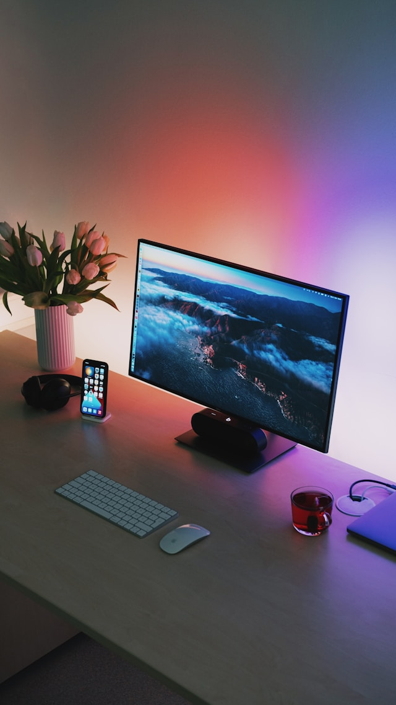

Фритрек и нулевой спринт: Подготовка к работе

Это было самое начало пути. На этом этапе важно было проникнуться основами и настроиться на учёбу. И, возможно, подумать, как новые знания могут повлиять на ваше будущее.
Чувствую, что это мое. Я в самом начале, но с уверенностью могу идти дальше. Радуюсь нахождению на своем новом "рабочем" месте.